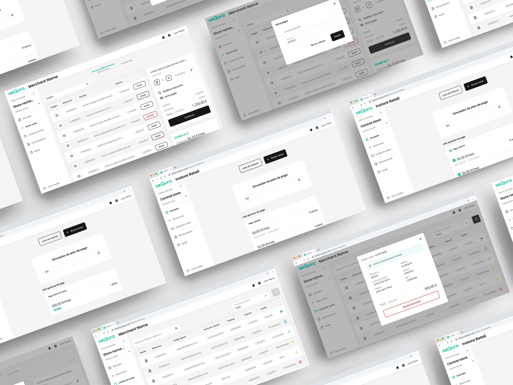
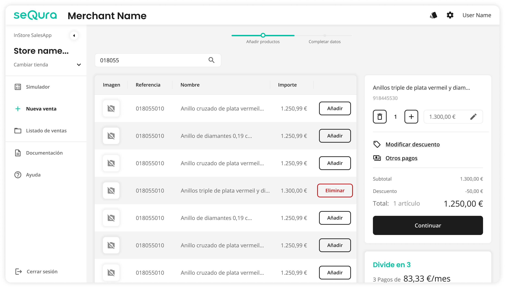
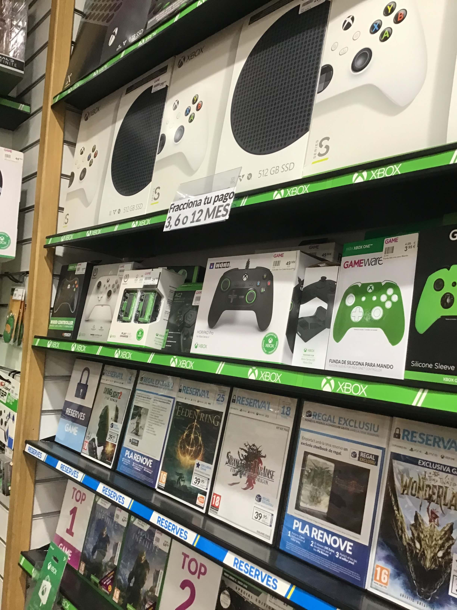
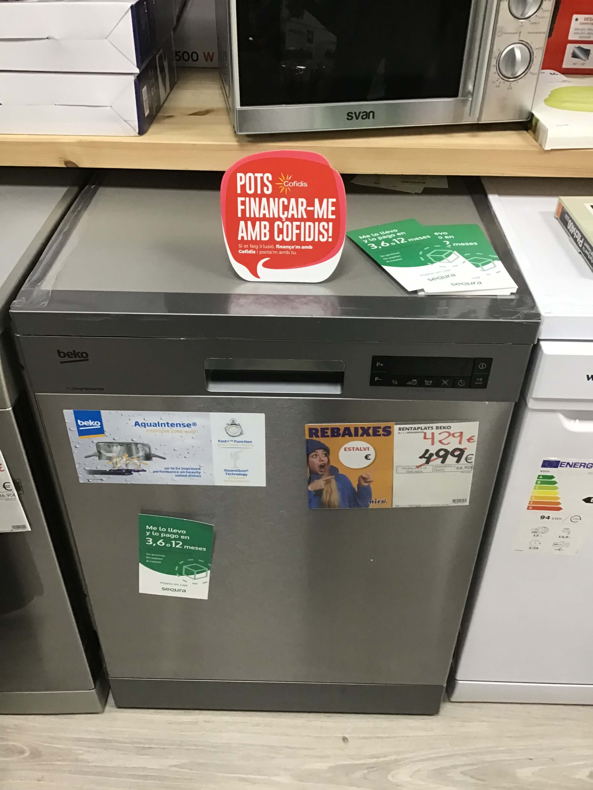
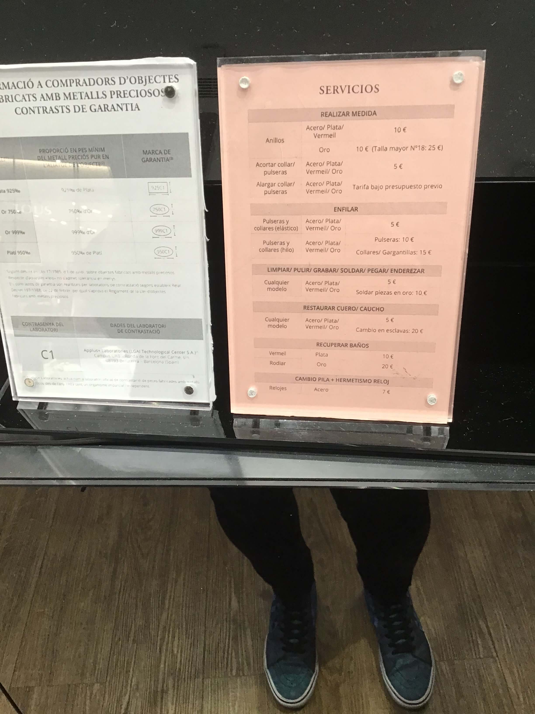
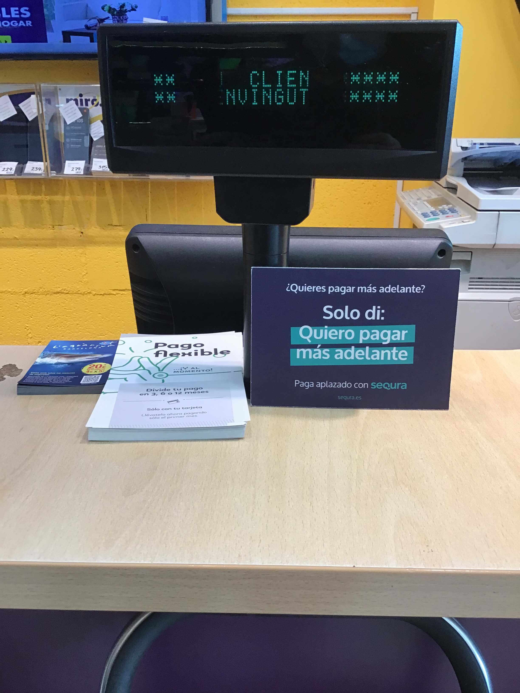
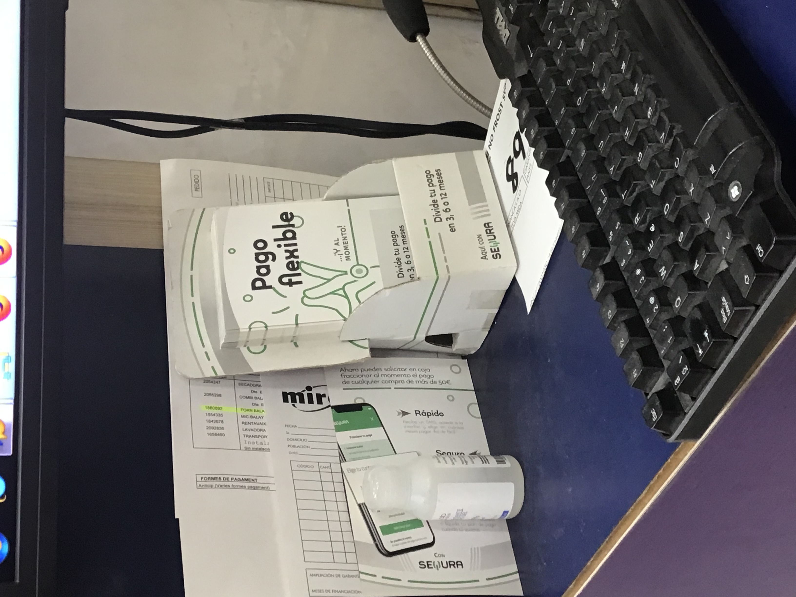
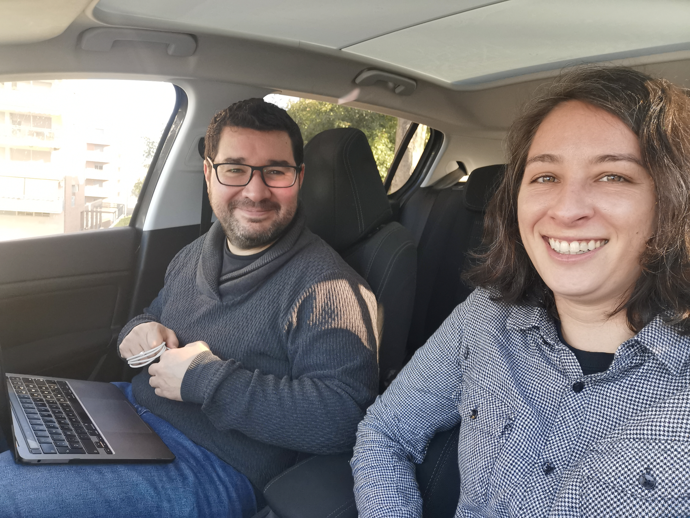
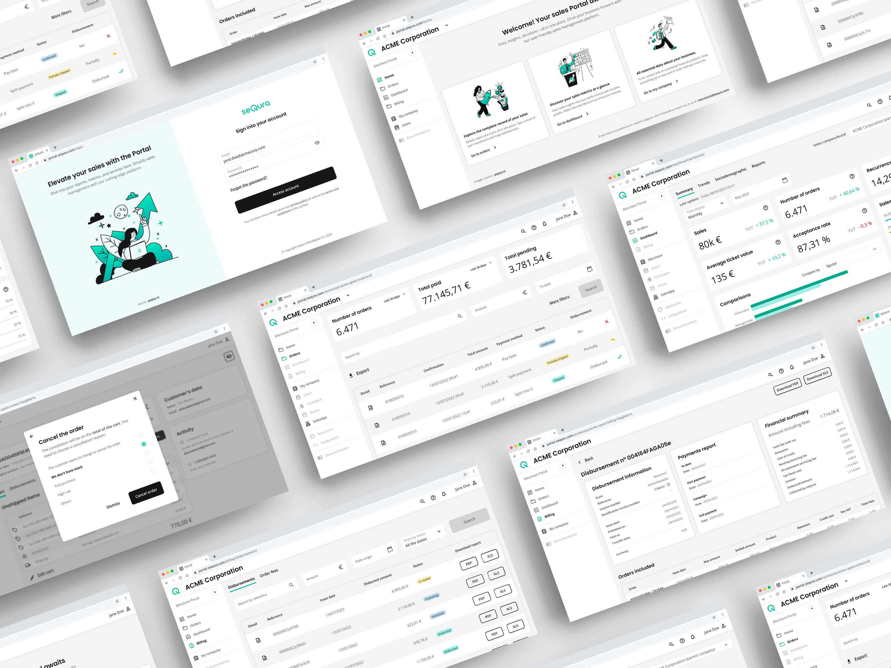

SeQura es una empresa líder en soluciones de pago flexible que permite a los comercios ofrecer financiación inmediata, tanto online como en tienda física. Durante casi cuatro años (de diciembre de 2020 a marzo de 2024), formé parte del equipo de producto, creciendo junto al propio producto: desde las primeras experiencias en punto de venta físico hasta el diseño de herramientas completas para todos los merchants de la plataforma.
A lo largo de este tiempo, participé en varios proyectos clave, contribuyendo al diseño visual, la definición de flujos y la creación de un Design System transversal que unificó la experiencia entre productos y equipos. También impulsamos la accesibilidad, la consistencia entre dispositivos y el salto a mercados internacionales.


Empecé en el proyecto Instore, una herramienta creada para los puntos de venta físicos, donde diseñamos experiencias rápidas y sencillas para dependientes y clientes. Además, analizamos las soluciones previas, que inspiraron parte de la evolución hacia una experiencia más escalable y coherente.
Antes de InStore, el equipo mantenía una solución para centros educativos (plataforma interna Shenzi) que resolvía necesidades específicas de gestión, pero que no escalaba al entorno retail. Partiendo de esa base analizamos las limitaciones (velocidad de flujo, ergonomía para dependientes y fallos en la gestión offline) y rediseñamos la experiencia para puntos de venta físicos, priorizando sencillez y velocidad en las interacciones.


Realizamos sesiones de prueba en tiendas físicas con prototipos en InVision, bonificando a las dependientas por su tiempo con cupones de SeQura. Estas pruebas nos dieron una visión directa del contexto real de uso y de la rapidez que necesitaban en las interacciones.
En el nuevo Merchant Portal, entrevistamos a merchants reales para entender sus procesos de gestión, puntos de fricción y así detectar oportunidades de mejora y adaptar la herramienta a sus necesidades diarias.
Estas dinámicas sentaron la base para implantar una cultura de continuous discovery, manteniendo al equipo de diseño siempre cerca de sus usuarios.
Mantener la conexión con comerciantes y dependientes fue esencial: combinamos guerrilla testing en tiendas, entrevistas con merchants y análisis de datos de uso para iterar rápidamente. Estas validaciones continuas alimentaron decisiones de producto y redujeron riesgos en lanzamientos.












Tras la etapa en InStore, pasé al Merchant Portal, una herramienta más compleja que centralizaba la relación de los comercios con seQura: gestión de pedidos, devoluciones, facturación, métricas y comunicación.
Aquí el reto fue unificar múltiples flujos en una interfaz limpia y modular, manteniendo la coherencia visual establecida desde el Design System.
Trabajamos codo con codo con product managers y desarrolladores, reforzando los procesos de continuous discovery y validación de prototipos con usuarios reales.
Además, definimos patrones para datos y tablas complejas, y documentamos casos de uso (CRUD, filtros, exportes) para que el Portal pudiera ampliarse con seguridad y coherencia.


A partir de InStore, se definieron las bases de un Design System transversal que se fue consolidando junto al resto de equipos de diseño.
Creamos patrones de interacción, tipografías, espaciados y componentes reutilizables que permitieron escalar el diseño y mantener consistencia entre productos.
El sistema se documentó y compartió internamente, facilitando la colaboración entre diseñadoras de diferentes squads y acelerando los tiempos de desarrollo.
También incorporamos criterios de accesibilidad como contrastes o navegación por teclado. Se definió una guía básica de a11y que el equipo usó como checklist en diseños.

Uno de los hitos más relevantes fue el salto internacional de seQura, que implicó adaptar la experiencia a nuevos mercados y usuarios. Participé en la coordinación de todo el proceso de traducción y localización (inglés, italiano y francés), asegurando que el tono, el contenido y la estructura se mantuvieran coherentes con la marca.
Este proceso nos llevó a revisar flujos completos, repensar microcopys y optimizar las interfaces para soportar diferentes longitudes de texto y formatos de moneda. Además de todo la gestión ya común de multiples variantes del producto.

Mi paso por seQura representó una etapa de crecimiento profesional y de madurez en diseño de producto.
Aprendí el valor de la colaboración transversal, la importancia de diseñar para contextos vivos y el poder de la coherencia visual cuando el producto escala.
La evolución de seQura, de una startup local a una fintech internacional, fue también un reflejo de la evolución de su equipo de diseño.
Más allá del trabajo, la cotidianeidad del equipo marcó una etapa en la que aprendí a equilibrar entrega y bienestar. Un equipo cercano donde la colaboración diaria se sentía como una pequeña comunidad.